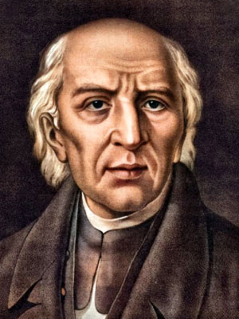

MES DE LA PATRIA
Inicio | Fechas Importantes | Personajes Ilustres | Datos Curiosos y Mitos
Personajes Ilustres
Miguel Hidalgo
Padre de la Patria

Cura del pueblo de Dolores que convocó al pueblo a levantarse en armas la madrugada del 16 de septiembre de 1810.
Josefa Ortiz de Domínguez
La Corregidora

Alertó a los insurgentes de que la conspiración de Querétaro había sido descubierta, adelantando el inicio del movimiento.
José María Morelos
Siervo de la Nación

Continuó la lucha tras la muerte de Hidalgo y convocó el Congreso de Chilpancingo, donde se proclamó la primera constitución.
Nombre: Contreras Kevin Enrique
Grado: 5J
Num. Control: 24308051280830
Escuela: CBTIS128